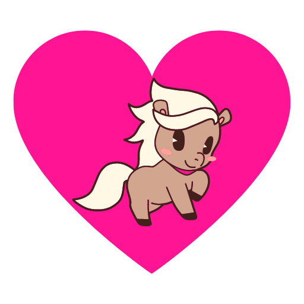

EquiLoveuse
Accueil
Races de chevaux
Chevaux de trait
Chevaux de selle
Chevaux de sport
Chevaux de course
Chevaux de travail
Poneys
Races rares et menacées
Soins et santé
Alimentation
Logement et installations
Soins vétérinaires
Gestion des parasites
Prévention des maladies
Premiers secours
Équitation et disciplines
Dressage
Saut d'obstacles
Équitation western
Endurance
Courses hippiques
Voltige
Attelage
Entraînement et éducation
Techniques d'entraînement
Éducation du jeune cheval
Renforcement des liens humain-cheval
Gestion du comportement
Culture équine
Histoire de l'équitation
Littérature équestre
Art équestre
Films et documentaires sur les chevaux
Proverbes et expressions équestres
Ressources supplémentaires
Glossaire équin
Bibliographie recommandée
Liens utiles
FAQ
Contact et assistance